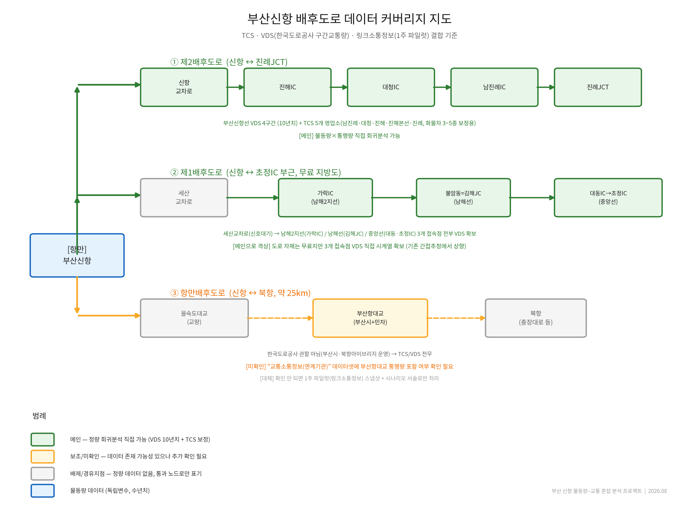

부산신항 컨테이너 물동량과 제1·제2·항만배후도로의 교통 혼잡 사이 관계를 VDS·TCS·스마트교차로 등 공공 교통데이터로 정량 분석하는 연구 프로젝트입니다. 현재 취약구간을 진단하고, 물동량 증가 시나리오에 따른 장래 혼잡을 예측합니다.

| 데이터셋 | 제공기관 | 단위 | 상태 |
|---|---|---|---|
| 구간교통량(VDS)부산신항선·남해2지선·남해선·중앙선 | 한국도로공사 | 일별·시간대별, 10년치 | MAIN |
| TCS 영업소별 교통량17개 영업소 · 1~6종 차종 구분 | 한국도로공사 | 시간대별, 수년치 | MAIN |
| 링크소통정보신항남로·가락대로·북항로 외 | 부산광역시 | 실시간, 상시 누적 | MAIN |
| 스마트교차로 접근로 교통량세산교차로 외 6개 지점 | 부산광역시 | 시간대별, API | MAIN |
| 구간레벨패턴정보요일×시간대 평균 속도 | 부산광역시 | 월간 | AUX |
| 교통소통정보(연계기관)을숙도대교 외 | 부산광역시 | 월간 | AUX |
| AVI 지점 교통량사상구 IC 비교축 | 부산광역시 | 실시간 | LIMITED |
| 유료도로 현황부산항대교 제원·통행료 | 부산광역시 | 1회성 | LIMITED |
상관분석 → 시차분석 → 회귀분석으로 물동량 증가율과 통행량 증가율 사이 탄력성을 산출합니다.
실시간 링크소통정보와 스마트교차로 데이터로 현재 혼잡 구간을 시간대별로 랭킹화합니다.
회귀 결과를 V/C비로 환산해 혼잡등급을 추정하고, 취약구간에 미래 시나리오를 겹칩니다.
예측된 병목구간과 배후교통망 확충계획을 대조해 정책 제안으로 연결합니다.